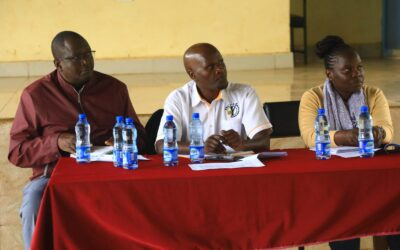

Enhancing Access to Justice through Public Participation: Reflections from Nyeri and Garissa on the Draft Complaints and Enforcement Regulations 2025

The Kenya National Commission on Human Rights (KNCHR) continues to uphold its constitutional mandate by promoting and protecting the fundamental rights and freedoms of all Kenyans. A key part of this mandate involves ensuring that the regulatory instruments guiding our operations are not only legally sound but also reflective of the lived realities and voices of the people we serve.
In this regard, the Commission embarked on a nationwide public participation exercise on the Draft Complaints and Enforcement Regulations, 2025. I had the honor of leading two of these critical forums held in Nyeri and Garissa counties both of which offered unique insights and reaffirmed the value of citizen engagement in policy development.
Nyeri County Forum: Deepening Dialogue on Rights Protection
Held on 15th July 2025 the Nyeri forum brought together a cross-section of stakeholders, including county officials, civil society organizations, law enforcement representatives, youth and women leaders, members of the clergy, and persons with disabilities. The forum was structured to create an open and safe space for dialogue around the proposed regulations.
Participants appreciated the effort by KNCHR to consult the public at the early stages of regulation development. Key recommendations included:
- Timely and efficient complaints processing: Participants cited delays in case resolution and called for the adoption of clear timelines and escalation mechanisms in the final regulations.
- Strengthening decentralized access: Many advocated for the establishment of complaint handling desks at the sub-county level or through partnerships with local administrators and human rights defenders.
- Whistleblower protection: There was unanimous agreement on the need for explicit provisions to protect complainants and whistleblowers from intimidation or retaliation.
- Community education: Participants called for the Commission to invest in human rights education and awareness, especially in rural areas where knowledge of the complaint process remains low.
This feedback underscored the high level of civic consciousness within the region and the demand for accountability and justice mechanisms that are both accessible and responsive.
Garissa County Forum: Promoting Inclusion and Cultural Sensitivity
In Garissa County, the public forum was held on 17th July 2025 drawing diverse representation from community elders, youth leaders, local NGOs, County Government officials, and members of the Muslim clergy. The cultural and socio-economic dynamics of the region offered a distinctive lens through which the draft regulations were reviewed.
Key takeaways included:
- Inclusion of minority and nomadic communities: Participants highlighted the need to adapt the complaints process to accommodate nomadic populations who often face systemic marginalization and may lack access to KNCHR offices.
- Use of local languages: There was a strong appeal to ensure the translation of human rights materials and complaints procedures into Somali and other local languages to foster inclusivity.
- Trust-building with law enforcement: Given historical tensions in the region, participants recommended provisions that enhance community-police relations and ensure KNCHR’s neutrality in rights enforcement.
- Religious and cultural alignment: Clerics urged the Commission to ensure that public sensitization campaigns respect religious beliefs while reinforcing the universality of human rights.
The Garissa engagement revealed the importance of crafting regulations that are not only technically robust but also culturally grounded and respectful of Kenya’s ethnic and religious diversity.
Why Public Participation Matters
The Constitution of Kenya, 2010, enshrines public participation as a national value and principle of governance (Article 10). For KNCHR, this is not merely a procedural formality it is a pillar of legitimacy, inclusivity, and responsiveness in all our actions.
Through these forums, citizens are not passive observers but active contributors to shaping the regulations that govern how their complaints are received, investigated, and resolved. This participatory approach also helps the Commission to identify gaps, mitigate potential implementation challenges, and build public trust.
Next Steps
The Commission is currently consolidating feedback from all counties into a comprehensive report that will inform the revision and finalization of the Complaints and Enforcement Regulations 2025. These regulations will enhance KNCHR’s ability to:
- Receive and process complaints with greater efficiency;
- Enforce compliance with human rights standards;
- Provide timely redress to victims of rights violations;
- Protect vulnerable populations and promote access to justice.
We remain committed to transparency, accountability, and public engagement throughout this process.
Conclusion
The forums in Nyeri and Garissa Counties reaffirmed that meaningful public participation is not only about gathering views it is about listening with intent, reflecting with humility, and acting with integrity.
As Commissioner, I wish to thank all participants who engaged candidly, raised critical concerns, and offered constructive proposals. The Draft Regulations 2025 are stronger because of your input.
We call upon all Kenyans to continue engaging with us as we finalize this important regulatory tool one that will safeguard the right to be heard and the right to justice for all.